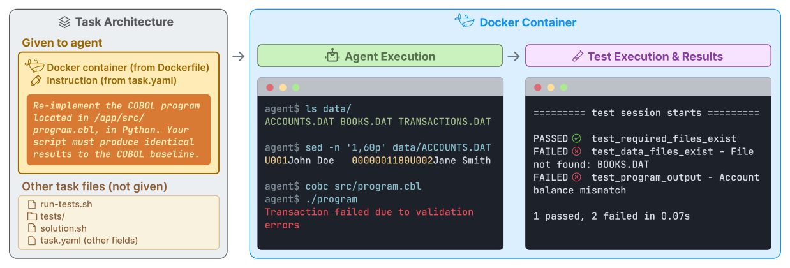

二、国内外研究现状
□ 通用数字智能体方法：三类方法 + 一个新前沿
纯 CLI 能力方法
Terminal-Bench · SWE-agent · OpenClaw

＋ 精确高效、单元测试可验证
－ 难观测渲染；依赖可编程接口
纯 GUI 能力方法
OSWorld · UI-TARS-2 · FastV · SnapKV

＋ 适用软件广；OSWorld 成绩显著提升（版本不一）
－ 截图开销高、步数多；缺验证信号
混合能力方法
CoAct-1 · OSWorld-MCP · GUI-Genesis

＋ 混合动作缩短轨迹
－ 第二接口仅 +3.2 / +4.5 pp；偏重结果判分
新前沿：走向真实世界
dots · Muse · OpenClaw · SimWorlds · RobotWorld

＋ 记忆与跨应用；可生成物理仿真
－ 职业环境支持有限；物理验证不足
共同缺口：缺少统一范式与过程可信的评测、可验证的混合训练环境，以及面向真实世界的落地验证